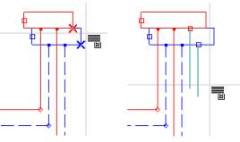

A padlófûtés installálásának szerkesztésének megkezdéséhez, a képernyõ jobb, alsó részén az "Installáció" feliratú könyvjelzõre kell kattintani (a konstrukció szerkesztése alatt a "Konstrukció" réteg lesz aktív). Ebben a pillanatban a helyiség bevonalkázása megszûnik, a konstrukciós elemeken pedig (helyiségek, falak, ablakok stb.) nem lehet végrehajtani szerkesztési feladatokat.
Ez a szakasz több altevékenységre bontható:
1. Fûtõfelületek beillesztése.
2. Források, és osztógyûjtõk beillesztése.
3. A virtuális bekötések létrehozásának és a bekötések helyességének ellenõrzése.
4. Az installációs elemek adatainak végsõ konfigurálása.
1. Fûtõfelületek beillesztése
Az installáció szerkesztését a fûtõfelületeknek azon helyiségekbe való beillesztésével kell kezdeni, amelyek padlófûtéssel fognak rendelkezni. Ehhez válasszuk a "Fûtõfelület" (a "Felület" eszközök sávjában) menüt, és kattintsunk bárhova annak a helyiségnek a területén belül, amelyikbe padlófûtést szeretnénk. A program az adott helyiségbe beilleszti a FF-et, amelyet egy zárt területet körülhatároló, zöld színû vonal jelöl. A fûtõfelület automatikusan kerül beillesztésre, megtartva a falaktól való távolságot a terv általános adatainak beállításainak (lásd az "Opciók / Általános adatok"-at) megfelelõen.
A program automatikusan beilleszti a fûtõfelületet, oly módon hogy az lefedi az egész helyiség területét. Lehetõség van azonban az FF, csupán a helyiség egy részére való behelyezésére. Ehhez standard fûtõfelület kell behelyeznünk a helyiségbe, majd a felbukkanó menüben - amelyet az egér jobb gombjával az FF címkéjén kattintva tudunk megjeleníteni - válasszuk a "Típus szabadon változtathatóra váltása" menüpontot, majd húzzuk el a sokszög kiválasztott csúcsait úgy, hogy az csak a helyiség egy részét fedje.
A program lehetõséget biztosit a fûtõfelületeknek egyszerre, az összes helyiségbe való behelyezésére, az egérrel való egyszeri kattintás segítségével. Válasszuk az eszközsávból a "Sugárzó" menübõl az elemet, vagy a "Szerkesztés" menübõl a "PF behelyezése az összes helyiségbe".
! A program nem végez diagnózist a padló konstrukcióját illetõen, nem vizsgálja hogy az egyes fûtõlemezek nem túl nagyok-e, vagy hogy megfelelõ alakkal rendelkeznek-e.
! Az elfogadott tervezési módszernek megfelelõen nem ajánlatos felosztani a fûtõfelületeket a számítások elvégzése elõtt, még a nagy helyiségek esetében sem. Az elsõ számítások elvégzése után a program tájékoztatni fog minket hány egységre (vagyis külön FF-re) osszuk az eredeti helyiség felületét ahhoz, hogy megfelelõ nyomásveszteséget, átfolyást érjünk el, illetve, hogy ne lépjük túl a vezeték maximális hosszát.
A fûtõfelületek rengeteg adattal rendelkeznek, amelyek megtekinthetõek, és módosíthatóak az adatok tabellájában. Az FF adatait közvetlenül a behelyezés után lehet konfigurálni, mindegyik FF számára külön, azonban az összes behelyezésekor, csoportosan (lásd az 4. pontot). Sorozatos FF-ek beillesztésekor az F3 funkcióbillentyû (Az utolsó beillesztése) rendkívül kényelmesen hasznosítható.
2. Osztógyûjtõk beillesztése, és a forráshoz való csatlakoztatása
Az FF-ek minden olyan helyiségbe való beállítása után, amelyek padlófûtéssel fognak rendelkezni, a rajzra megfelelõ számú osztót kell betenni. Az osztó elhelyezése után konfigurálni kell annak adatait, mivel ezeknek hatásuk van a kapcsolódások szerkesztésének lehetõségeire.
! Az adattáblában nem szükséges feltétlenül megadni a kilépéspárok számát az osztóból (a különbözõ FF-eket számolva), mivel a program az bekötések berajzolásakor az AUTO üzemmódban automatikusan kibõvíti az osztót további kilépésekkel, amikor beköti hozzá a bekötéseket.

Ha az általános adatokban nincs meghatározva az osztó alapértelmezett típusa, akkor a hozzáférhetõk közül kell egyet választani. Minden elosztót szakaszoknak kell kapcsolnia a forráshoz. Egy forrás több elosztóhoz tartozhat, mindamellett ha ezen elosztók különbözõ szinteken vannak (vagyis különbözõ munkalapokon), akkor mindenképp a távoli kapcsolatokat azon munkalapról kell indítani, amelyen a forrás található, az elosztót tartalmazó munkalaphoz
3. A virtuális bekötések létrehozásának és a bekötések helyességének ellenõrzése
Az F7 billentyû megnyomása után át kell lépni a terv általános adatainak ablakába, és ellenõrizni kell, hogy a „Virtuális bekötések létrehozása” mezõ ki van –e jelölve. Alapértelmezésben ez a mezõ ki van jelölve aktívként, mivel a tervezés kezdeti szakaszában nincs feltétlenül szükség a bekötések berajzolására.
A rendszer bekötései helyességének ellenõrzéséhez A Shift+F2 billentyûkombináció ("Bekötések ellenõrzése") megnyomása után a program végrehajtja a bekötések helyességének diagnosztizálását, és megjeleníti a rá vonatkozó eredményeket tartalmazó megfelelõ ablakot. Az ebben az ablakban levõ, kiválasztott üzenetre való kattintással, a program kijelöli azt az elemet, amelyre az üzenet vonatkozik. Az üzenetek hiánya azt jelzi, hogy minden bekötés helyesen végrehajtott, illetve, hogy nem szerepelnek bekötetlen elemek.
A bekötések megvizsgálása nem szükségszerû, mivel az esetleges bekötési hibák láthatóvá válnak a diagnosztika során, a számítások elvégzése után (lásd a 2.3.5 fejezetet), azonban ajánlatos, ha lehetõvé teszi minden rendellenesség megszüntetését ebben az szakaszban, még az FF adatainak, és a bekötések részletes konfigurálása elõtt.
4. Az installáció elemei adatainak végleges konfigurálása
Az installációs elemek beillesztése után szükségszerû az adataik megvizsgálása és megerõsítése, amely adatok az elem (vagy több azonos típusú elem) kijelölésekor jelennek meg.
Fûtõfelületek adatai
Fûtõfelület kijelöléséhez az adott FF címkéjének négyszögére kell kattintani - ennek célja a bekötések, és más olyan elemek kijelölésének megkönnyítése, amelyek szerepelnek fûtõfelületeken.
Ugyanúgy, mint a helyiségek esetében a legtöbb adat alapértelmezésben meg van adva, azonban egyes adatokat a felhasználónak kell bevinnie, ha azok különböznek az alapértelmezett adatoktól. A legfontosabbak közé tartoznak a padlófelület típusa, és a fûtõfelület alatt fellépõ hõmérséklet. Ha a fûtõfelület alatti hõmérséklet a konstrukciós szinten kerül megadásra, akkor az installációs szinten csak a képe lesz látható a szerkesztés lehetõsége nélkül. Különbözõ FF-khez, különbözõ alul levõ hõmérséklet tartozhat ugyanabban a helyiségben, aminek köszönhetõen figyelembe lehet venni, olyan eseteket, amikor pl. a helyiség egy része alápincézett, egy másik része pedig közvetlenül a földön helyezkedik el. Ilyen esetben kell a "Konstrukció" szinten, a " ti/qi alatta" mezõben beírni a "-" jelet. Ekkor egy vagy több FF berajzolása után a helyiségbe, lehetõség lesz az alattuk levõ hõmérséklet szerkesztésére az FF adataiban.
! A kiválasztott FF-hez a többi fûtõfelülethez tartozó alul levõ hõmérsékletektõl jelentõsen eltérõ hõmérsékletérték megadása magával vonhatja a fûtõfelület konstrukciója vastagságának növelését vagy csökkentését (szintkülönbség keletkezik az FF konstrukciói közt).
A padlóburkolat fajtája meghatározza a hõellenállását, aminek nagy befolyása van a méretezési eredményekre. Abban az esetben, amikor a befektetõnek nincs végleges álláspontja a padlófelületre vonatkozóan, válasszuk a legkevésbé elõnyöset a lehetségesek közül vagy el kell fogadni a 0,1 normatív értéket.
A fûtõfelület szimbóluma és a belsõ hõmérséklet a helyiség adatai alapján kerülnek meghatározásra. Az FF szimbóluma bármely FF esetében szabadon módosítható, azonban a belsõ hõmérséklet megváltoztatása céljából át kell váltani a "Konstrukció" könyvjelzõre, és megváltoztatni a helyiség megfelelõ adatát, amelyben a tárgyalt FF található.
Figyelmet kell fordítanunk a fûtõfelület típusát meghatározó mezõre. Ez a mezõ többek közt lehetõvé teszi olyan speciális fajtájú fûtõfelület figyelembe vételét, mint a bekötésekkel fûtött FF. Az ilyen felület nem lesz bekötve az osztóra, a hozzá tartozó hõveszteség pedig, a lehetõségek keretein belül, a rajta keresztül futó, a többi FF-hez vezetõ bekötések segítségével fedezhetõ. Az ilyen FF bevezetésének szükségszerûsége abból a ténybõl következik, hogy sok adat, mint pl. a felület típusa, az izolációs réteg típusa, a csövek rögzítésének módja stb. elengedhetetlen feltétele az átmenõ bekötések teljesítményenek kiszámításához.
Az "Effektív felület" mezõ megadja a program által kijelölt effektív fûtõfelületet az adott FF esetében. Ez az érték kisebb (néha jelentõsen) az adott FF-re esõ felülettõl a falak belvilágában, mivel a program levonja a falnál levõ, padlófûtéssel nem fedett sávokat, valamint a beépített felületeket (pl. bútorokkal).
Bizonyos esetekben meg kell adni a peremzónákat. A peremzónát az a teljes vagy részleges FF alkotja, amelynek megemelt a megengedett maximális padló hõmérséklete. A program egy adott helyiség FF-ei közt a hõveszteség automatikus elosztásának folyamán nagyobb teljesítményt biztosit egy négyzetméterre a peremzónákban. Peremzónát be lehet vezetni az elsõ méretezés végrehajtása elõtt. A program három különbözõ konstrukciós megoldást biztosít a peremzónák tekintetében.
- az egész FF-t PZ-ként definiáljuk (jelölése: oPZ). Ez a megoldás akkor használatos, amikor a PZ jelentõs felületû. Ez azért hasznos, mert lehetõvé teszi, hogy a PZ-re a BZH-hez viszonyítva más munkaparamétereket lehessen elérni (más hõmérsékletkülönbség), ami lehetõvé teszi az egy m2-re esõ teljesítmény jelentõs megnövelését ugyanannál az elõremenõ hõmérsékletnél. Megkönnyíti a hidraulikus szabályozást is,
- a FF peremzónát alkotó része a vezetékek kiosztásának sûrítésével jön létre (jelölése: zPZ). Ez a megoldás a padló teljesítményének jelentéktelen emelését teszi lehetõvé, minthogy a fûtõközeg átlaghõmérséklete ebben az esetben a PZ-ben és a BZ-ben is azonos, a vezetékek fektetési kiosztásának sûrítése pedig elég jelentéktelen hatású,
- a FF egy része peremzóna, amikor is ez a kezdeti része a fûtõkörnek (pPZ jelölés). A vezetékek ebben a típusú peremzónában is be vannak sûrítve. Ennek a konstrukciónak köszönhetõen a fûtõközeg elõször a peremzónán folyik keresztül, és csak ezután jut a belsõ zónába. Ez a megoldás sokkal nagyobb teljesítmény elérését teszi lehetõvé a peremzónában, mint a zPZ variáns. Ez a megoldás olyan esetekben is felhasználható, amikor az adott vezetékfektetési változat (kiosztási távolság) a padló maximális hõmérsékletének túllépésével jár, és ez okból nem alkalmazható. Ilyen esetben a kör elejére kötött, integrált PZ alkalmazása lehûti a fûtõközeget azon a területen, ahol a padló maximális hõmérséklete magasabb lehet, és ennek köszönhetõen elkerülhetõ a határérték túllépése a belsõ zónában.
! Az „egyszeres meander” elhelyezési variációnál nem
lehet a zPZ típusú peremzónát lefektetni, mivel a fûtõkörnek besûrített része
egyben a fûtõkör kezdete, így ez a pPZ peremzóna típus lesz.
A zPZ típusú peremzóna az elõremenõ és a visszatérõ vezetékek felváltott
fektetését lehetõvé tevõ változatoknál alkalmazható, tehát a kettõs meandernél
és a csigánál.
A "Padló Konstrukciója" mezõ lehetõséget biztosit a padlóburkolat kiválasztására, valamint a fûtõlemez alatt az alapértelmezettõl eltérõ hõszigetelés megadására, vagy a hõszigetelés egyéni módon történõ megadására, pl. többrétegû, az adott gyártó rendszerébe illõ külön rétegekbõl felépülõ.
Az adott FF egyéni konfigurálását az "Általános standard adatok" mezõ irányítja. Ezen mezõ értékének "nem"- re állításával lehetõvé válik az elfogadott alapértelmezett csõrögzítési mód, csõtípus és csõátmérõ, a megengedett fektetési távolság és a megengedett hõmérsékletkülönbség változtatása külön a PZ-re és a BZ-re.
Elosztók adatai
A méretezésre nagy befolyással bírnak az "Dt/Dq min" és az "Dt/Dq max" adatok, amelyek megfelelõen a közeg hõmérsékletének minimális és maximális esését jelentik, külön megadva a belsõ és a peremzónák esetében, valamint a minden egyes bekötött kör hidraulikus ellenállását jelentõ "Max DeltaP" adat. Vegyük észre, hogy az osztón levõ szelepek az osztóhoz szabott szerelvényeket jelentenek, a szelepek kiválasztása az elõremenõ és a visszatérõ vezetékre az osztó adattáblájában történik.